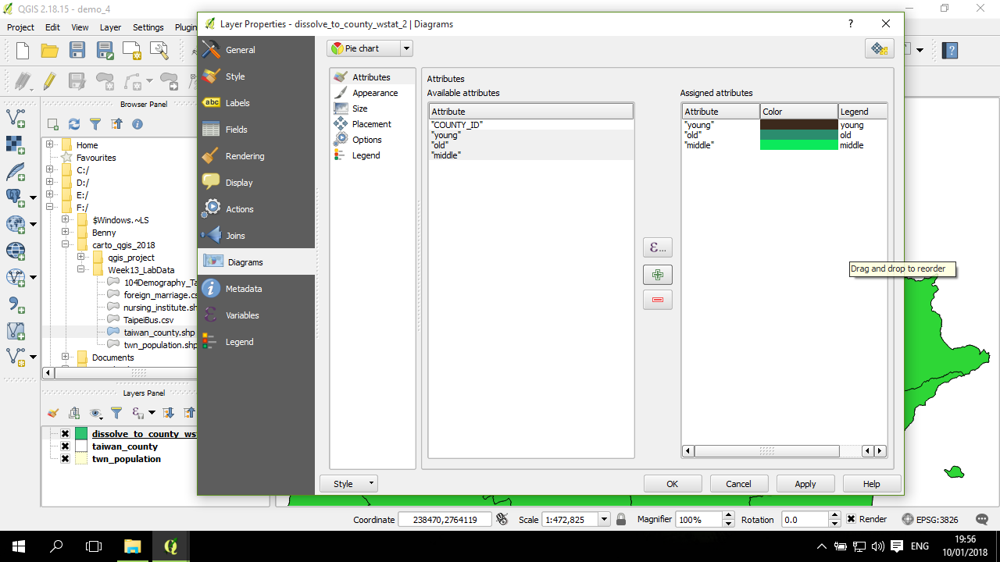
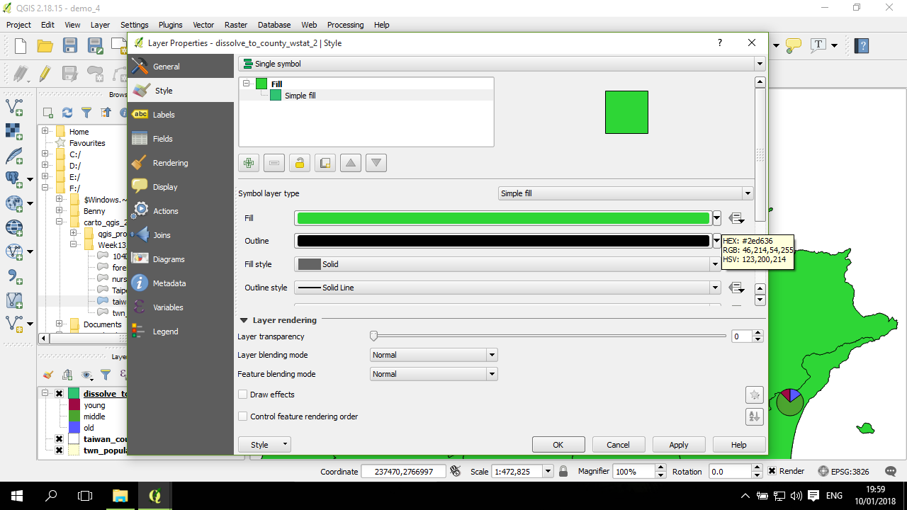
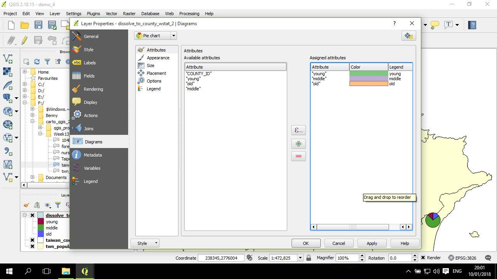

地圖上的圓餅圖 (pie chart)
這節中將說明如何在地圖上用圓餅圖標示不同區域的多屬性值統計分佈。因為在地圖上繪製圓餅圖需要考慮地圖的區域範圍及其中空間物件的多寡：換句話說，如果是在全台灣尺度下，不太可能繪製鄉鎮或更小的空間物件的圓餅圖，因為會數量太多而導致眼花繚亂。因此，本章節將以台灣的縣市資料為基礎，進行圓餅圖的呈現。
資料
這節將使用的是台灣縣市層級的人口資料，是透過 twn_population.shp 經過 屬性計算 及 dissolve後而得：
這節將使用這三個欄位，即15歲以下、15-65歲、65歲以上，進行圓餅圖的繪製：
設定圓餅圖欄位
打開 圖層的 properties，進入 Diagrams 分頁，預設情況下是沒有任何圖表的設定 (No diagrams)：
在 No diagrams 的下拉選單中，選取 Pie chart，然後選定要繪製的欄位 (例如三種人口數資料)，然後按下中間的 + 號按鈕：
三種人口數資料分別會用三種顏色：

調整顏色
可以點擊顏色區塊，試著稍微調整三種人口數的顏色，讓顏色的對比更強烈一些：
設定好顏色後，可以點擊套用(Apply)，看看效果：
這時候的圓餅圖是等大小的，視覺上會誤導讀者，讓讀者覺得每一個區域都有類似的人數。因此應該調整每一個區域有不同的大小的圓餅圖。
調整大小
回到設定圓餅圖的視窗，點開 Size 分頁。預設是 Fixed size，所以需要換成 Scaled size：
若還是要用同樣大小的圓餅圖，可以在這裡調整統一大小的設定。
在 Scaled size 底下的 Attribute，選調整大小的欄位名稱，或是像這個範例中，會需要將三個欄位進行加總來設定大小，因此點看右邊的 sigma 符號，用 Fields and Values 的欄位名稱及上方的 + 號來設定計算方程式：
設定好屬性加總的方程式後，按一下 Maximum value 右方的 Find，讓 QGIS 找到加總值的最大值，其下方的 Size 是對應最大加總值的圓餅圖大小，右邊的 Scale 指的是圓餅圖等比例縮放所根據的符號大小依據，預設是面積：
確定設定無誤後，點一下套用，觀察視覺效果：

感覺前面的設定中圓餅圖有些大，所以稍微調整大小(Size: 50-->30)，點套用觀察：
調整背景色
接下來需要設定一下背景顏色，檔案匯入時預設的顏色可能會太過顯眼，搶走了讀者對主角 (圓餅圖) 的注意力：

透過 Style 分頁，選 Simple fill，然後調整 Fill 顏色。這裡是調整成淡黃色：
若有需要，也可以調整下方的 Layer transparency (圖層透明度)，預設為0，表示不透明。
圓餅圖顏色設定建議
另一方面，圓餅圖的顏色也還是不太理想，這裡建議可以參考 Colorbrewer 2.0 ，使用其中的色碼複製到 QGIS 的三種人口所使用的顏色區塊的設定中。
